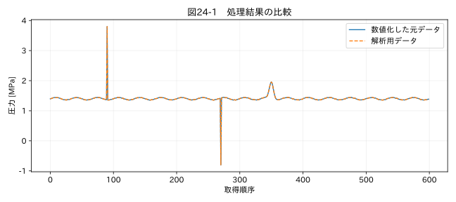

第VI部 実務の自動化 / 第24章
この章の節
汎用データクリーニングツールを完成させる
学習目標
本書のCLIを実行し、設定、出力、ログ、自動テストを理解する。新しい測定へ適用する前に、入力の意味と処理の適用範囲を確認できるようになる。
24.1 道具としての到達点
ここまでの原則を、Excel・CSV入力、列設定、日時検査、欠損分類、外れ値候補、スパイク候補、飽和候補、固定値候補、条件付き補間、比較、レポート、履歴へまとめる。初期設定では値を補間・平滑化・削除しない。単位と型の正規化は別列へ行い、原ファイルを上書きしない。
「汎用」はあらゆる機器にそのまま適用できるという意味ではない。本アプリは対応するCSVと.xlsxの表形式を設定で扱う教材実装である。複数行見出しの自動判定、任意数式の再計算、非標準なバイナリ形式、機器固有プロトコルは含まない。第2章の考え方で入力アダプターを追加する。
24.2 最初の実行
ZIPを展開し、python-timeseries-cleaning フォルダを作業ディレクトリにする。はじめにの手順でPythonと依存関係を準備した後、次を実行する。Windows PowerShellでは一行で入力できる。
python clean_timeseries.py --input datasets/raw/02_pressure.csv --config configs/02_pressure.yaml --output results/pressure_review
出力は入力ごとのサブフォルダに分かれる。今回なら results/pressure_review/000_00_02_pressure/ に次のファイルができる。
| ファイル | 内容 |
|---|---|
| clean_data.xlsx | 原値、数値化値、解析値、由来、単位 |
| quality_flags.xlsx | 時刻・値の品質フラグ |
| quality_report.html | 品質指標、比較図、候補抜粋、設定 |
| processing_log.csv | 変更内容。変更なしならinspection_only |
| run_manifest.json | 環境、ハッシュ、設定、統計 |
一段上には index.html と batch_summary.json ができ、成功・失敗を一覧できる。複数ファイルや複数シートで同名出力が衝突しないための構成である。既存の非空出力ディレクトリは拒否するので、再実行では別名を指定する。
24.3 Excel帳票の実行
python clean_timeseries.py --input datasets/raw/10_irregular_excel.xlsx --config configs/10_workbook.yaml --output results/workbook_review
この設定は測定シートの4行目を見出しとし、数値日時を1900日付システムとして扱う。内部の空白行は消さず、時刻不正と欠損を付ける。source_rowはExcelでの実際の行番号を保持する。単位付き文字列は数値化するが、「故障」を補間しない。
複数シートを同じ構造として読む場合、reader.sheetをnullにできる。ただし条件履歴など別構造のシートが混ざればエラーになる。シートごとに役割を確認して対象を指定する方が安全である。
24.4 条件付き補間を有効にする
停止教材の設定をコピーし、次の項目を追加・変更する。理由と承認者は演習用の例であり、実務では自分の組織の判断を記入する。
mode_column: mode
allowed_modes: [run]
interpolation:
enabled: true
max_gap_seconds: 30
reason: "演習：同一運転区間内の短い記録欠損を直線補間"
approved_by: "教材の検証規則"
条件は、時刻が有効・一意・増加、欠損コードとして認識された空欄、同一連続モード、両端が候補異常でない、区間長が規定以下、である。変換不能文字列は対象にしない。未確認の外れ値を欠損化して補間する機能もない。
24.5 コードの構成を読む
clean_timeseries.py が引数を受ける入口、tsclean/app.py が読み込み・設定検査・出力、tsclean/core.py が数値変換や検出・補間の共通関数である。各関数は第3、5、10、11、15、19章で説明した処理に対応する。全ソースは教材ZIPに含まれ、API・実装の読み方から閲覧できる。
processing_logは変更があった行に、元の値、補間後の値、ルール、理由、承認者、実行UTC時刻、原本・設定ハッシュを記録する。単位正規化はrawとnumericの列差、およびeffective_rulesに残り、補間変更ログと分けて管理する。検出条件が増えたら、レポートの説明とテストも一緒に更新する。
関連する詳細実験は実践補講に掲載。入力形式・同期・補間・校正・多変量・チャンク境界を扱う。
実行するコードと結果
run.py · 共通処理の全ソース
教材フォルダで python examples/chapter24/run.py を実行。以下は省略のないスクリプト。共通モジュールは教材一式に含む。
from pathlib import Path
import sys
ROOT=Path(__file__).resolve().parents[2]
sys.path.insert(0,str(ROOT))
sys.path.insert(0,str(ROOT/'examples'))
import numpy as np
import pandas as pd
from common import load,truth,seconds,plot
from tsclean.core import numeric,timestamps,time_flags,hampel,freeze_candidates,interpolate_short,compare
from tempfile import TemporaryDirectory
from tsclean.app import main
with TemporaryDirectory() as folder:
code=main(['--input',str(ROOT/'datasets/raw/02_pressure.csv'),'--config',str(ROOT/'configs/02_pressure.yaml'),'--output',str(Path(folder)/'result')])
assert code==0
p=Path(folder)/'result/000_00_02_pressure/clean_data.xlsx'
df=pd.read_excel(p)
assert df.value__numeric.equals(df.value__analysis)
print('Excel再読込:',len(df),'行。初期設定で値の変更なし。')
plot(24,np.arange(len(df)),{'数値化した元データ':df.value__numeric,'解析用データ':df.value__analysis},'圧力 [MPa]',xlabel='取得順序')
検証環境での実行結果を開く
{"processed": 1, "errors": 0}
Excel再読込: 600 行。初期設定で値の変更なし。

24.6 複数ファイルと終了コード
python clean_timeseries.py --input trial_A.csv trial_B.csv --config cleaning_rules.yaml --output results/batch_01
この例のtrial_A.csv、trial_B.csv、cleaning_rules.yamlは利用者が用意する実ファイル名に置き換える。教材で試す場合は同じ構造の datasets/raw/prototype_part1.csv、prototype_part2.csv と configs/09_prototypes.yaml を指定できる。各ファイルは独立に処理し、境界をまたぐ結合・補間はしない。連続試験の一体処理には第15・21章の境界検査を追加する。
正常に対象を処理した場合の終了コードは0、入力エラーが一つでもあった場合は2である。データに品質候補があるだけなら処理自体は成功しており、終了コード0でもREVIEW_REQUIREDとなる。プログラムの成否とデータの品質を区別する。
24.7 検証してから使う
python -m pytest tests -q
自動テストは空データ、全欠損、重複、逆転、不規則間隔、候補なし、極端値、文字列混入、異長系列の結合、25万行CSVのチャンク集計などを検査する。Hampelの尺度や補間の結果は、既知の小さな数値例で独立に確認する。出力Excelを再読込し、既定設定で数値が変わらないことも確かめる。
図24-1はCLIが出力したExcelを読み直して作った比較図である。「保存できた」だけではなく、再読込した値が想定通りかを確認する。本書の検証環境以外のOSやライブラリ版へ移す場合、同じテストを実行する。Windows・macOSでのネイティブ実行をこの制作環境で検証したとは扱わない。
24.8 業務へ移すときの判断
最初は既知の少量データへ適用し、担当者が原帳票と照合する。次に過去の代表データ、異常事例、機器更新前後、試験条件の境界を含むデータで確認する。候補数が少ないことを成功条件にしない。見逃してはいけない事象を保持し、処理履歴から説明できることを確認する。
本ツールには認証付き承認画面、データベース、監視サーバー、ストリーミングの状態管理はない。大量運用へ進むなら、入出力保管、権限、並列実行、異常通知、バックアップ、データ保持期間を別途設計する。基礎となる検出・保全の原則は変わらない。
演習
基礎演習
圧力教材でCLIを実行し、5種類の出力と上位のバッチ一覧を確認する。元CSVのハッシュが実行前後で同じかも確かめる。
応用演習
停止教材の補間設定を有効化し、2点だけがinterpolatedになること、停止中の90点が残ることを確認する。
実務演習
自分の測定器を想定し、列名、単位、周期、欠損コード、候補規則、補間しない条件、受け入れ検査を設定仕様として書く。分からない項目は推測で埋めず、確認先を明記する。
演習解答・解説を表示する
基礎：rawの内容は保持され、numericとanalysisが一致する。候補フラグが付いても値は自動修正されない。入力ファイルのハッシュは変わらない。
応用：補間区間が30秒以内で同一run区間にある2点だけが対象になる。変更行はprocessing_logへ記録される。時間軸が不正な別入力では補間が止まることも確認する。
実務：唯一の設定はない。測定器仕様、試験条件、評価量、許容誤差、独立の確認手段に基づいて採否を説明できることを評価する。「前と同じだから」は根拠として不十分である。
章末まとめ
使えるツールとは、値を整えるだけでなく、分からないことを分からないと示せる道具である。原本を残し、候補と確定を分け、処理の影響を検証し、結果の由来を説明する。本書のコードを、その判断を支える土台として使ってほしい。